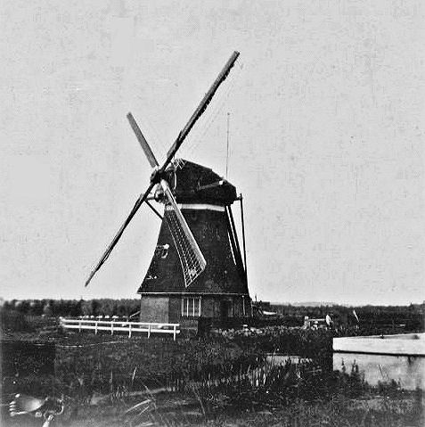
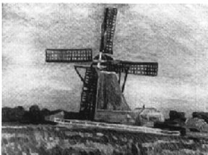
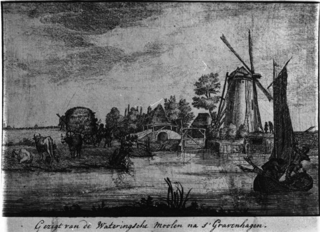
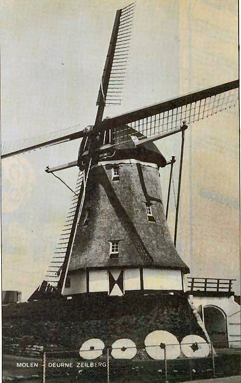
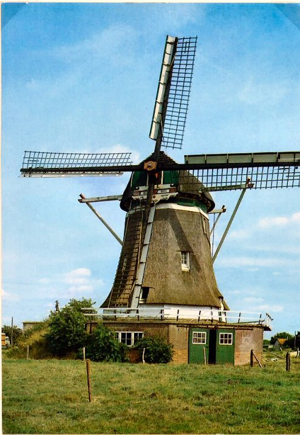
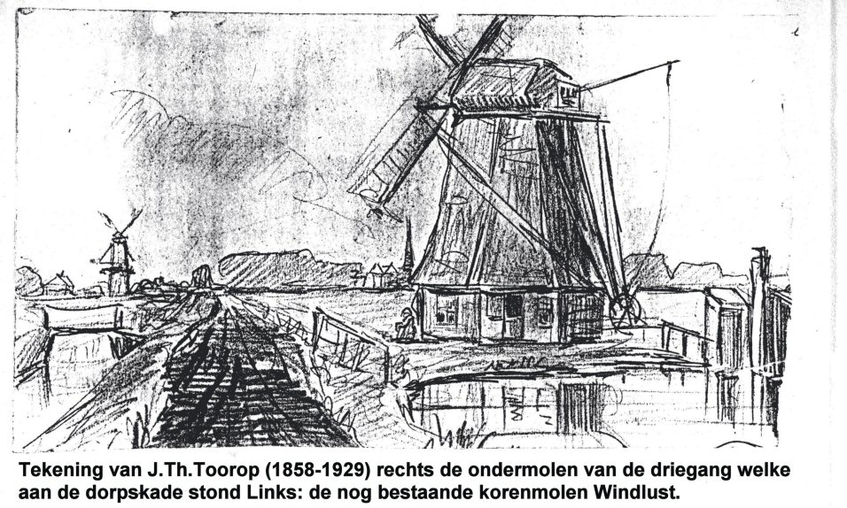

Wateringen verdwenen molens

 De molen van de Wippolder- Deze stond op de hoek van de Tomatenlaan/Oosteinde- gebouwd in 1843-afgebrand door blikseminslag in 1916 |
 Wippoldermolen 2 |
|
 Molen van de Wippolder. |
 Oosteinde Wateringen Tekening van schilder Scheltema. |
|
 Oud Wateringveldsemolen met links achter de korenmolen |
 De Zwethbrug met daarachter de molen van de Nieuw Wateringveldse polder in 1807. |
|
 Wateringen had een driegang welke stond in de Nieuw Wateringveldse polder. Zie hierboven de middenmolen van de driegang welke stond aan de Dorpskade- deze molen bestaat nog en staat in Zeilberg |
|
 De Marie Antoinette in 2013. |
|
|
 De ondermolen van de driegang welke stond op de hoek van de Middenweg/Dorpskade-deze molen bestaat nog en staat in Elspeet. |
 Idem Elspeet 2003 |
 Zo ziet de ondermolen er thans in 2003 uit. Zeer triest. |
 De ondermolen van de driegang welke te Wateringen stond. Thans in Elspeet. |
 Elspeet de Hoop in betere tijden. |
 Elspeet de Hoop in betere tijden. |
 Elspeet |
 Elspeet. |
 Molen de Hoop te Elspeet nu situatie 2013. |
 De Hoop, Elspeet 2014 |
 De Hoop, Elspeet 2014 |
 De Hoop, Elspeet 2014 Zie de zwarte ster in het midden van de baard. Dit vertelt zijn herkomst. Het wapen van Wateringen. |
 Hier kijkt men vanaf het plein in Wateringen door de Herenstraat naar de twee zaagmolens die aan de Laan van Scheltema stonden. |
 Met dank aan Johan Bakker. |
|
|
Klik op de onderstaand knop voor de foto's van de funderingen van de driegang welke stond op de hoek van de Middenweg (ondermolen) en halverwege tussen de Middenweg en de Zwet de middelmolen. De bovenmolen stond aan de Zwetkade noord richting Rijswijk waar nu het huidige poldergemaal staat. Deze molen is op 13-9-1887 ten gevolge van blikseminslag geheel verbrand.  |
 Deze pagina is gemaakt op 25-12-2006: Tijd: 20:54 uur.
Deze pagina is gemaakt op 25-12-2006: Tijd: 20:54 uur.

Laatste wijziging:3-8-2009 : Tijd 20:53 uur.
Met dank aan: de
Hollandsche molen/Rob Pols/Hans Klok/Gerard Barendse/
Erwin Esselink/Teun van der Sloot/Jan Lemmers voor het gebruik van de foto's